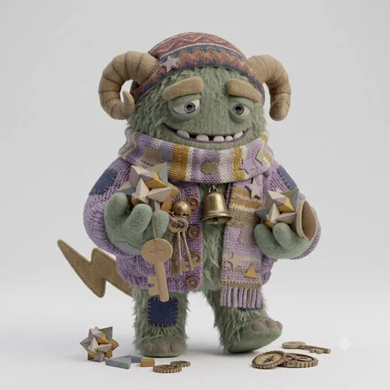

monster type
ISTJ-O-C
石橋を叩く几帳面モンスター
約束を、確実に果たしていく人
あなたという人
任されたことを、決めた通りに、期日までに仕上げます。派手さより信頼で評価される働き方を選び、事実と前例を土台に判断します。曖昧なまま進む状況に、強いストレスを感じます。
確かめて、そのうえでもう一度確かめてから渡るタイプ。自分の判断を疑い、人にも簡単には相談しないので、慎重さが二重にかかります。間違いはほとんど起きませんが、渡り終える頃には、向こう岸の状況が変わっていることがあります。
4つのサブタイプの中での位置


同じ基本タイプでも、自分への確信（A / O）と人への構え（H / C）で現れ方が変わります。
強みと、気をつけたいところ
ここは基本タイプ（ISTJ）に共通する性質です。
強み
- 精度と期日を、安定して守り続けられる
- 手順や記録を整え、再現できる形にする
- 感情に左右されず、冷静に対処できる
気をつけたいところ
- やり方の変更に抵抗を感じやすい
- 抽象的な構想の話に価値を見出しにくい
- 自分にも他人にも「べき」を強く当てはめる
ISTJ-O-C ならでは
このタイプの強み
見落としが極端に少ない。監査や保守のように、間違いが許されない場所でいちばん価値が出ます。
落とし穴
慎重さが機会を逃す。「小さく試して、壊れても構わない場所」を一つ決めておくと、堅さを保ったまま選択肢が増えます。
仕事での適性
力を発揮する環境
役割と基準がはっきりし、腰を据えて積み上げられる環境
向いている役割
運用、管理、品質保証、実行の中核
監査・運用・保守に最適。小さく試す機会を持つと選択肢が増える。
相性
かみ合う相手


見ている世界が補い合う組み合わせ。人への構えが同じなので距離の取り方で揉めにくく、自分への確信が違うぶん、迷いのなさと慎重さを互いに預けられます。
安心できる相手


テンポも間合いも近く、説明のいらない関係になりやすい相手。長く一緒にいても疲れにくい組み合わせです。
刺激をくれる相手

価値観の置き所が違うため摩擦は起きますが、自分に足りない視点を最も速く手渡してくれる相手です。
相手のコードがわかれば、2人の相性をこの場で見られます。
この人との相性を調べるこの診断は、回答時点での自己認識を6つの軸で整理したものです。人の性格は状況や時期によって変わります。
© 2026 WONDER BROTHERS INC. All rights reserved.